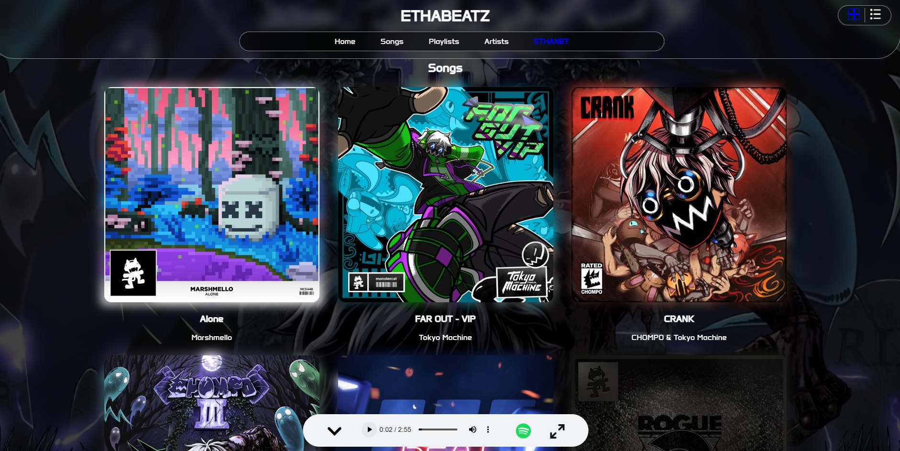
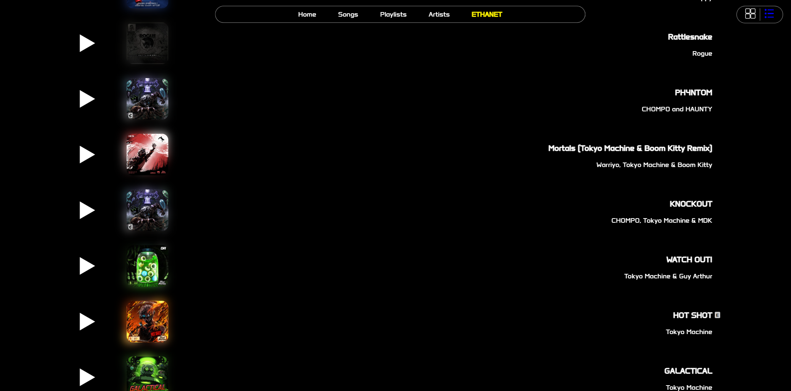
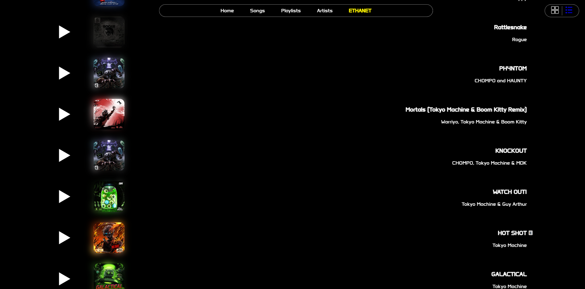

Version 4.0

Design is Expanding
The header and navigation bar gets the design and the navigation stays put.
 

Grid or List?
You can now change the view of the songs by just pressing the buttons on the top right of the page. You can switch from grid to list view.
Other notes
- Changed the thickness of dividers